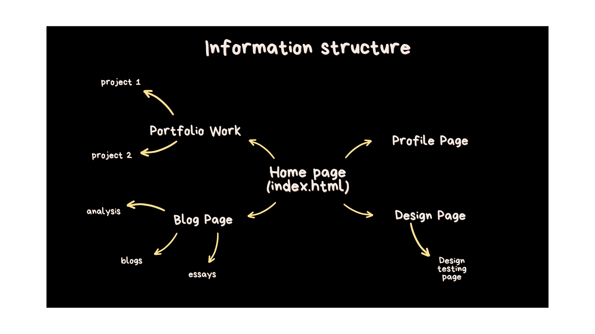
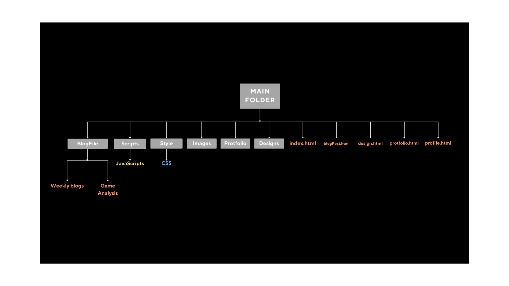

Week 4
IxD Process
This process will guide me throughout the rest of my website's development. Certain elements may change over time, but design is an iterative process so its ok! This process includes:
- Goal Alignment
- Information Structure
- User Flow
- Interface
- Design
- Implementation
Goal Alignment
My goal for this website is to show future employers and people of interest the skills I am capable of and to give them a brief introduction to who I am. I want users to see:
- my unity projects and builds
- coding projects (including this website)
- my profile
users should be able to freely explore the portfolio website and get a good idea of who I am and what I do. Users would want to see:
- a display of my skills (game design, programing)
- get a brief introduction... to me? of me? (English was a struggle here)
Information Structure
 User Flow

I will create a semiotic system that looks and feels predictable. This will allow for better user experience and interaction.
I will keep in mind the 3-click rule; users should be able to get to wherever they'd like in 3 clicks.
Interface Elements
I will ensure that the Navigational and Informational components are implemented clearly and represented in a user-friendly approach.
| Landing Page |

|
|---|---|
| Portfolio Page |

|
| Blogs and Essays Page |

|
| Blog/Essay/Analysis Page |

|
| Design Page |

|
| About Me Page |

|
Design Principles
In order to design successful and user-friendly UX and UI, I will implement the core principles of UX and UI. These elements will also give the user a first glance idea of who I am and what I find important.


Implementation
I haven't started learning JavaScript and CSS, so the website just contains the folder structure and semantic markup I've managed to implement on HTML. I just need to make sure that any in-line code is taken care of before I start adding CSS and JavaScript into the website to prevent future disaster.
Website Progress
Its currently the 4th week since the birth of this website, and I must say I've really enjoyed the learning process. I enjoyed learning HTML. The process of building a website and being able to traverse through this public virtual page that I have created is a new experience that is very different from putting my games on itch. So far, I am happy with the file layout of the website. I feel comfortable writing code that draws information from different files because of the intuitive system I've created for myself to navigate.
At the moment, the website just looks a bit "nude", so I am looking forward to learning CSS so it can look a more clothed and appropriate... I am also looking forward to learning JavaScript, since that opens the doors to creating web-art similar to particle life and boids algorithms that I want to give a shot.